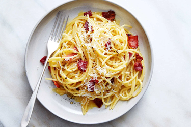
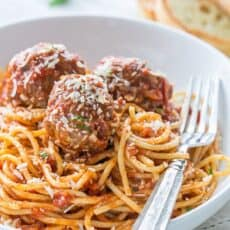

This website will be a collective journal of recipes I have learned to make. I started cooking in 2020 during Covid due to boredom, but I have come to love it. I love learning new flavor profiles and new techniques from many different cultures of food. There will be a variety of cooking styles, meal options, and cuisines!
Dinner recipes will often consist of a carb and a protein. Most commonly I cook many Italian dinner recipes which focus on a pasta and a protein. I have also loved learning about many asian dishes that will be included. I'm excited to dive deeper into these.
 | Recipe | Cook time | Rating |
|---|---|---|
| Carbonara | 30 minutes | 4/5 STARS |
| Spaghetti & Meatballs | 1 hour 5 minutes | 4/5 STARS |